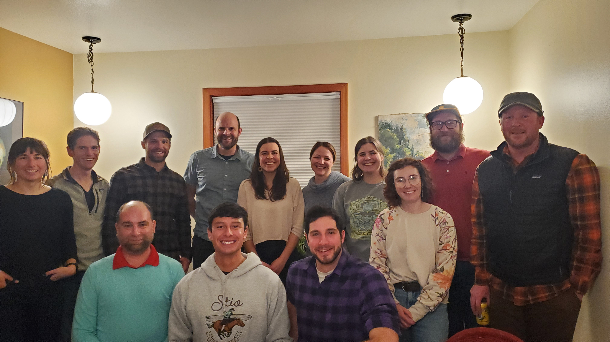
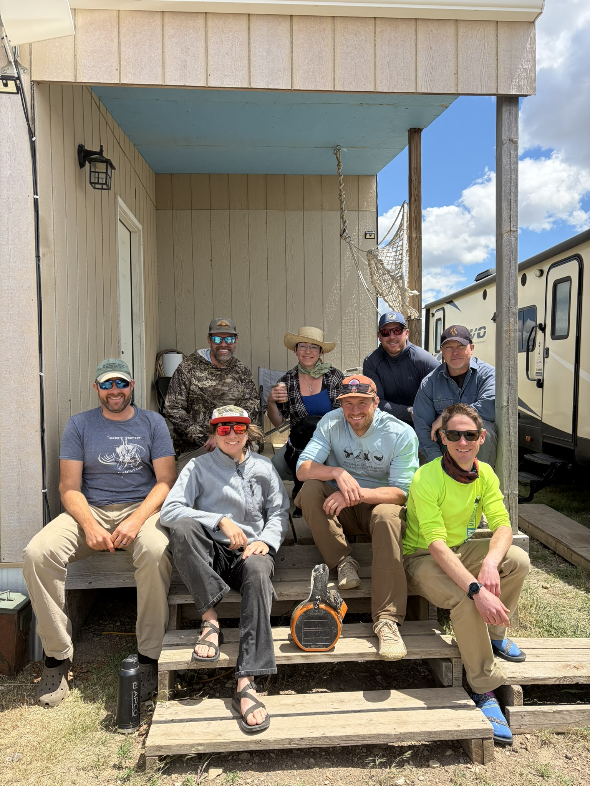
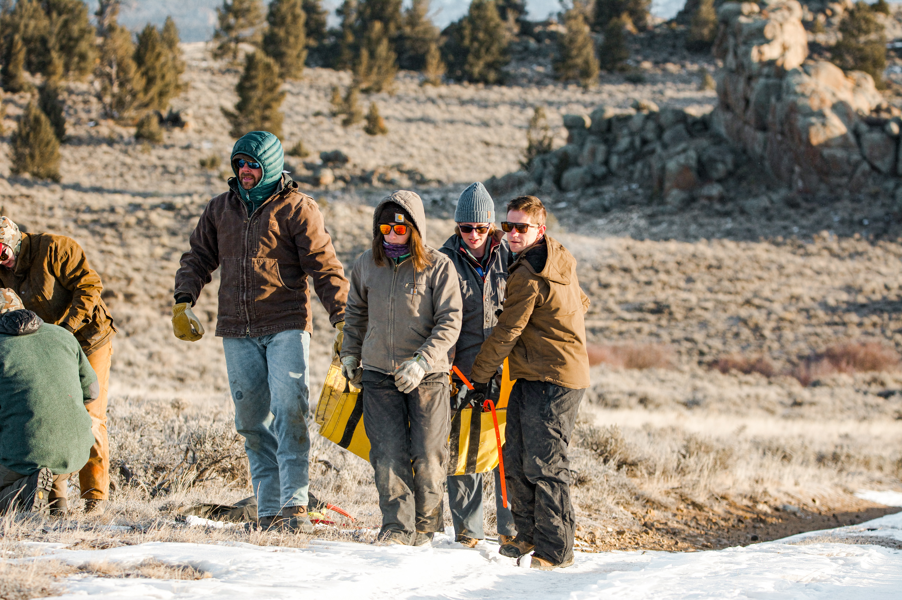

Scientists · Postdocs · Students
Who We Are
We are a dynamic ensemble of dedicated individuals, including research scientists, postdocs, graduate students, and undergraduate students. We are all interested in understanding how ecosystems work, in conserving wildlife, habitat, and intact landscapes, and in working with a variety of great partners.
Photo: Ashley Townsend
Meet the lab
Our Lab
Research scientists, postdocs, and students working on wildlife movement, habitat and conservation. Select a researcher to read their story.
Join us
Work with us
Students and staff in the Merkle Research Group develop and apply theoretical concepts in ecology while contributing to wildlife conservation and management, as part of a collaborative team.



What our students do
Students within the Merkle Research Group are expected to develop and apply theoretical concepts in ecology while also contributing to wildlife conservation and management. Students are also expected to participate in a team environment, present results at professional conferences and agency meetings, publish results in a timely manner in peer-reviewed scientific outlets, and assist with preparation of grant proposals.
Prospective students
Prospective students with experience conducting and publishing research, working in GIS, and managing and analyzing large datasets in program R are especially encouraged to inquire. Please email Dr. Jerod Merkle for more information.
Former members
Lab Alumni
Former students, postdocs and staff.